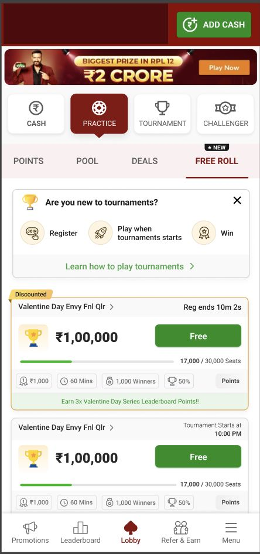
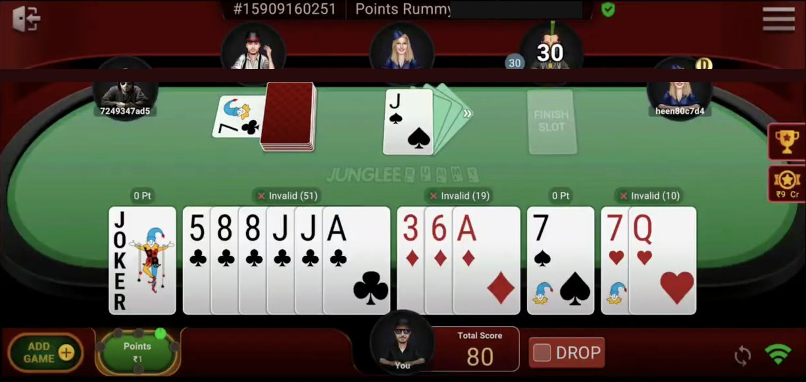
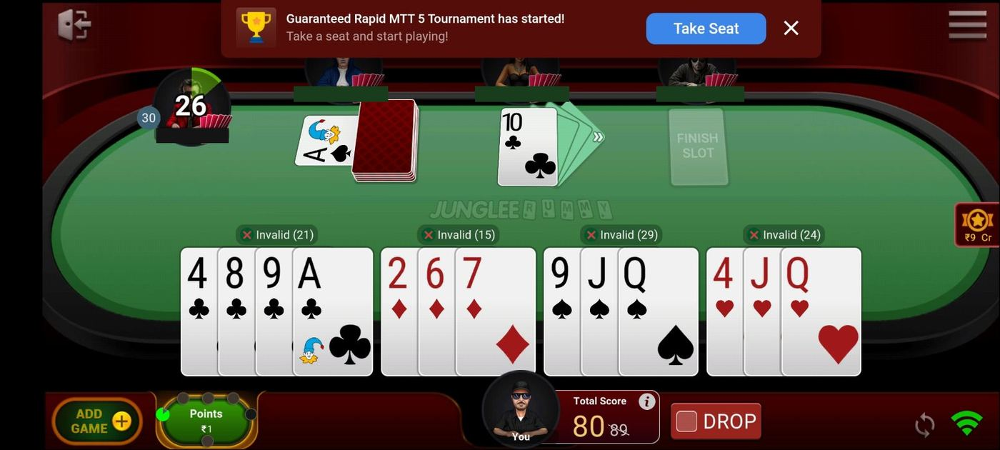

The problem
Players who play both tournaments and ring games generate more net gaming revenue than any other cohort. Growing that cohort had been attempted by scaling tournament supply and running ticket drops.
Every one of those levers lives inside the tournament lobby, so they only reach players who already go there. A ring-game player who had never entered a tournament had no reason to visit it.
The objective was to raise the share of players doing both, by building entry points from the surfaces those players already used.
What I decided, and what I turned down
Move the acquisition surface out of the tournament lobby. Suggested tournaments appear in the cash and practice lobbies and on the game tables. The player is pitched while doing what they came to do rather than being expected to navigate to a product they have never used.

Pitch mid-game, and constrain it heavily. The game table widget is the most intrusive placement in the specification, and most of the surrounding rules exist to limit it.

Suppress any tournament the player cannot afford. If the entry fee exceeds the wallet balance the widget does not show it, so a player is never pulled out of a live game into an add-cash flow.
Cap attention deliberately. One tournament at a time. Three widgets maximum on the table. The refer-a-friend and suggestion widgets are never open together, and the responsible-gaming and tournament widgets close each other. Nudges compete with each other before they compete with anything else.
Make the nudge self-limiting. Ignored across a configurable number of sessions, it disables itself for that player for a set number of days.
Treat registration and participation as separate problems. Registering and turning up are different behaviours with different failure modes.

Auto Take Seat redirects a registered player to their seat as the tournament starts. The exclusions matter as much as the mechanism: nothing fires during finish, declaration, the result screen, or the player's own turn. Interrupting someone mid-hand would trade a tournament entry for a worse experience in the game they are already playing.
What happened
The commissioning metric moved. The share of players playing both tournaments and ring games rose from about 35% to about 40%, where the lobby work had left participation flat.
The ring product was not cannibalised. Ring rake per user and ring games played rose in all three value tiers. This is the result the restraints were built for, and the reason the intrusive placement was defensible.
The participation gain came from the middle tier, where tournament rake per user rose about 18%, tournaments played about 5%, and deposits about 5%. The top tier was flat on volume and up over 7% on tournament rake — more expensive tournaments, not more of them. The lowest tier played more and produced almost no revenue movement.
Margin diverged by tier. For the top tier, net gaming revenue rose faster including tournament cost than excluding it, so the incremental entries carried less subsidy. For the other two the relationship reversed.
One result went the other way. Average active days on tournaments fell for the top two tiers while platform active days rose.
What I learned
Ingress converts within a session, not across days. More tournaments across fewer days. The pitch reaches a player already in the app; it does not give them a reason to return tomorrow. Reading this project as a frequency win would have been wrong.
The restraints were the product. Ring rake rose in every tier, which is the evidence that the exclusions held. The same feature without them would have bought tournament entries with the revenue that pays for everything.
Growth in entries is not uniformly profitable. A single participation target would have hidden that entries from some cohorts are close to break-even after subsidy.